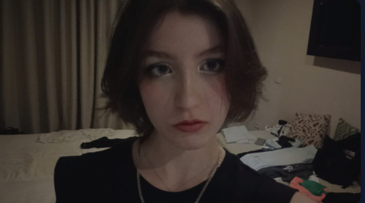

Cv Charline Frémont
Présentation
Bonjour, je m'appelle Charline Frémont et je suis élève de seconde en GT à Lille.
Je cherche un stage dans le domaine du cinéma, de l'audiovisuel ou de la photographie.

Qualité
- Je suis autonome
- D'après mes anciens professeurs mature
- Mais aussi sensible et empathique
- Je suis également très observatrice et créative
Centres d'intérêt
- J'aime imaginer des choses dans mon esprit (par exemple des scénarios, des dialogues, créer des personnages)
- J'adore tout le domaine du cinéma et la beauté et créativité de la photographie
- Beaucoup de choses m'intéressent et je suis douée dans le manuel
Diplômes et formations